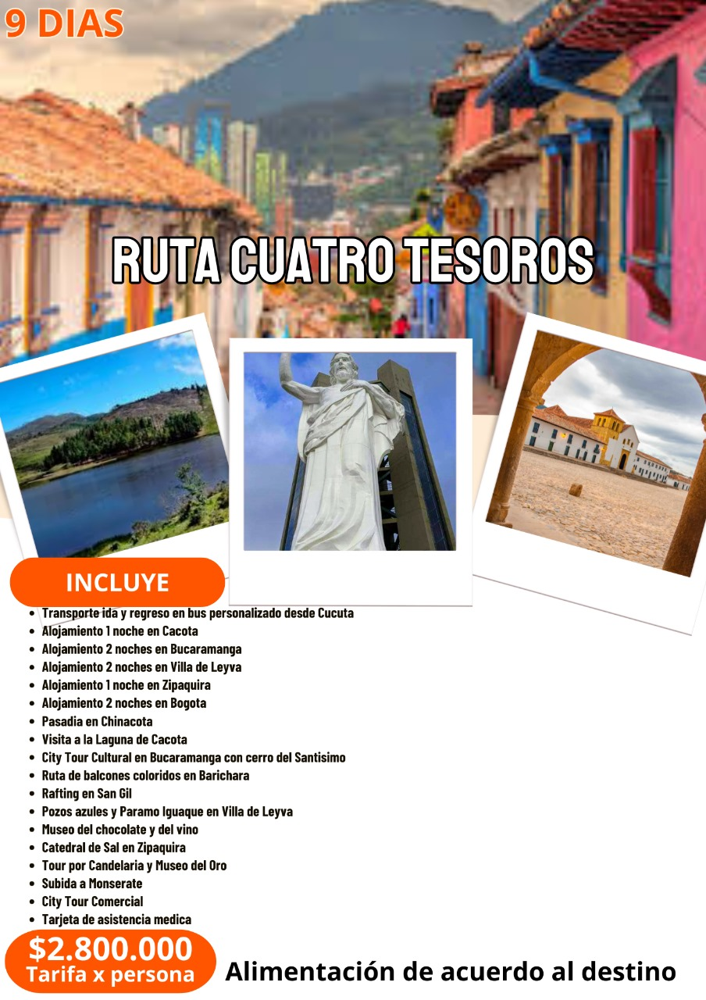

Descubre la Magia de Colombia
Un viaje a través de los más espectaculares corredores turísticos, donde la naturaleza, cultura y tradición se entrelazan para crear experiencias inolvidables.
Descubre como recorrer Colombia
Explorar Corredores
Corredores Turísticos de Colombia
Selecciona una región para descubrir sus maravillas
Aquí puedes ver todo el hermoso mapa de Colombia
Explora cada región para descubrir sus maravillas turísticas.
Los Andes Orientales
La región de los Andes Orientales en Colombia es una maravilla geográfica y cultural que abarca los departamentos de Boyacá, Cundinamarca, Norte de Santander, Santander y parte de Meta. Esta cordillera, que se extiende desde el Nudo de Almaguer hasta la Serranía de Perijá, alberga una extraordinaria diversidad de paisajes, desde páramos y nevados hasta valles fértiles y cañones profundos.
Características destacadas:
- Altitud promedio: 2.500 - 3.500 metros sobre el nivel del mar
- Clima: Variado, desde frío páramo hasta templado
- Ecosistemas: Páramos, bosques andinos, valles interandinos
- Principales atractivos: Parque Nacional Natural El Cocuy, Lago de Tota, Villa de Leyva
Narrativa de los Andes
Corredor Turístico
Andes Orientales
Ruta Cuatro Tesoros
